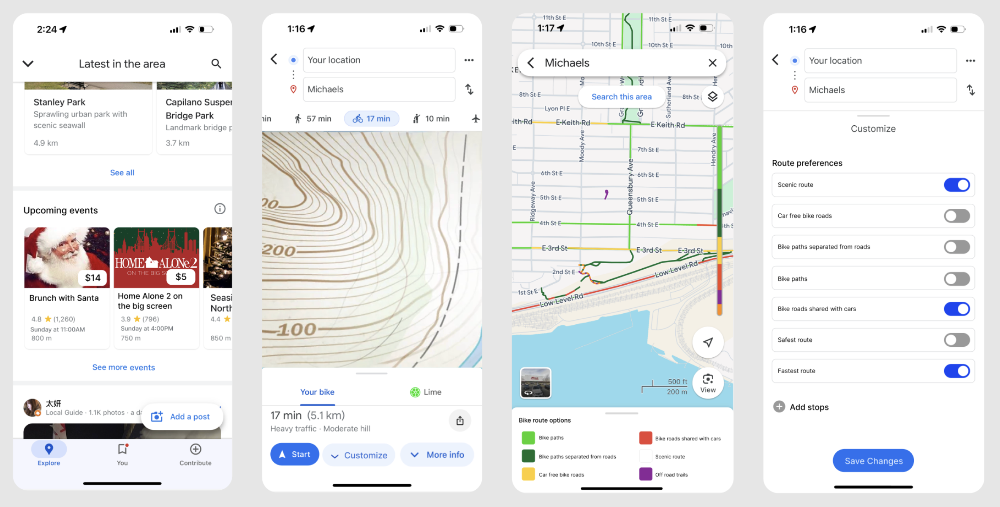

Josephine Diplock
Work
About
Contact
Hi there! My name is Jojo and I am a Interaction Designer inspired to create intuitive design that connects people and technology.
Interaction Designer
My work
Check out my projects

Google Maps design review
case study / UX research / interaction design
Google Maps design review
case study / UX research / interaction design